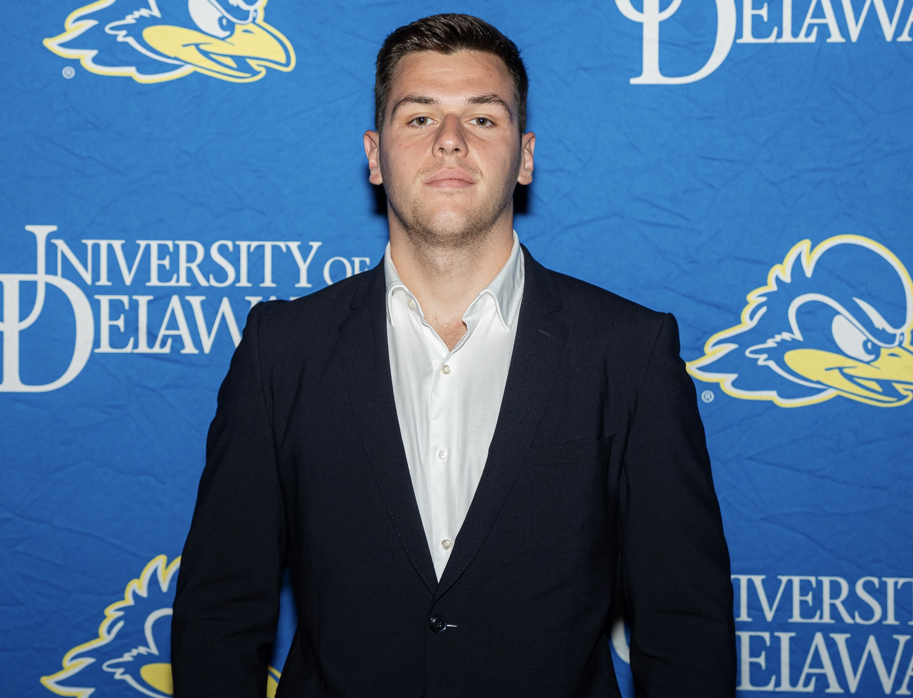

Co-Founder
Simeon Sabev
BA · Mathematics & Economics
MBA · Missouri State
CFA L1
Financial Data Analyst · MSCI
Former D1 Athlete
National Team Member
Simeon has been an academic and athletic asset to numerous organizations. His journey began at the High School of Mathematics and Natural Sciences, where he developed a rigorous foundation in mathematics. A distinguished former national athlete, he has proven his success outside of academia with multiple national titles and medals from the Balkan Games. Simeon possesses exceptional depth in applied mathematics and financial fundamentals. He specializes in the analysis, verification, and processing of a variety of financial databases and currently serves as a Financial Data Analyst at MSCI.
- BA — University of Delaware, Mathematics & Economics
- Master's student — Missouri State University, MBA (STEM Designation)
- CFA Level 1
- Financial Data Analyst, MSCI (Morgan Stanley Capital International)
- Multi-time All-CAA honoree — individual & relay events
- Academic All-District
- Multi-time Bulgarian National Championship medalist
- Former member — Bulgarian Swimming Federation national team
- Math tutor — Mathematical Sciences Learning Laboratory (MSLL), 2 years